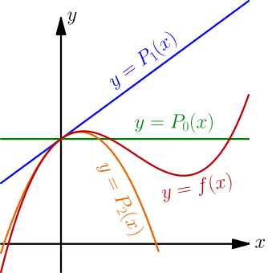
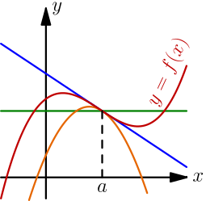
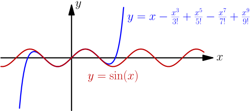

Taylor Polynomials¶
So far we have calculated sine and cosine values with Python.
>>> import math
>>> math.sin(1)
0.8414709848078965
In this chapter we'll learn how these functions work, and we'll also write our own sin and cos implementations that would be good enough for pretty much everything.
This tutorial uses radians, unit circle trig and derivatives. Be sure to learn these things first.
WTF are Taylor polynomials?¶
Here are a few graphs:

The red graph is a complicated curve that the other graphs are trying to approximate.
Let's make some notes based on the graphs:
- All graphs have the same height at 0, so $P_0(0)=P_1(0)=P_2(0)=f(0)$.
- $P_1$ and $P_2$ go to the same direction as $f$ at 0, so $P_1'(0)=P_2'(0)=f'(0)$.
- This one isn't as obvious as other stuff above, but anyway, $P_2''(0)=f''(0)$.
Here $f''$ means the derivative of the derivative.
Let's find the equations of $P_0(x)$, $P_1(x)$ and $P_2(x)$. The $P_0$ is easy:
$$\begin{align} P_0(x) = f(0) \end{align}$$It's also easy to get started with $P_1$.
$$\begin{align} P_1'(x) = f'(0) \text{ and } P_1(0) = f(0) \end{align}$$If you know integrals you can calculate this yourself. Just note that $f'(0)$ is a constant because it doesn't depend on the value of $x$. Anyway, the only $P_1$ that satisfies these things is here:
$$\begin{align} P_1(x) = f'(0)x + f(0) = f'(0)x + P_0(x) \end{align}$$Here I used the fact that $P_0(x) = f(0)$. You'll see why later.
Let's find $P_2$ and yet another polynomial $P_3$ similarly:
$$\begin{align} &P_2''(x) = f''(0) \text{ and } P_2'(0) = f'(0) \text{ and } P_2(0) = f(0) \\ &P_2'(x) = f''(0)x + f'(0) \\ &P_2(x) = \frac{f''(0)}{2}x^2 + f'(0)x + f(0) = \frac{f''(0)}{2}x^2 + P_1(x)\\ \\ &P_3'''(x)=f'''(0)\text{ and }P_3''(0)=f''(0)\text{ and }P_3'(0)=f'(0)\text{ and }P_3(0)=f(0) \\ &P_3''(x)=f'''(0)x+f''(0) \\ &P_3'(x)=\frac{f'''(0)}{2}x^2+f''(0)x+f'(0) \\ &P_3(x)=\frac{f'''(0)}{2\cdot3}x^3+\frac{f''(0)}{2}x^2+f'(0)x+f(0) = \frac{f'''(0)}{2\cdot3}x^3 + P_2(x) \end{align}$$So, here are all the results we have gotten so far, written in a way that makes the pattern quite obvious.
$$\begin{align} &P_0(x) = f(0) \\ &P_1(x) = P_0(x) + \frac{f'(0)}{1}x \\ &P_2(x) = P_1(x) + \frac{f''(0)}{1 \cdot 2}x^2 \\ &P_3(x) = P_2(x) + \frac{f'''(0)}{1 \cdot 2 \cdot 3}x^3 \end{align}$$Next we'll write the rule for calculating $P_n(x)$ for any $n$, but we need more notation:
- $f^{(n)}(x)$ is the $n$'th derivative of $f$, e.g. $f^{(5)}(x)=f'''''(x)$.
- $n! = 1 \cdot 2 \cdot 3 \cdot ... \cdot n$. Most programming languages have a
factorial(n)function that returns $n!$.
Let's do this.
$$\begin{align} P_n(x) = f(0) + \frac{f'(0)}{1!}x + \frac{f''(0)}{2!}x^2 + ... + \frac{f^{(n)}(0)}{n!}x^n \end{align}$$This is known as the $n$'th Taylor polynomial.
We used $x=0$ here as a "magic number" that we always put to $f(\ \ )$, but that doesn't need to be 0. Here's a more generalized Taylor polynomial:
$$\begin{align} P_n(x) = f(a) + \frac{f'(a)}{1!}(x-a) + \frac{f''(a)}{2!}(x-a)^2 + ... + \frac{f^{(n)}(a)}{n!}(x-a)^n \end{align}$$The Taylor polynomial with $a=0$ is also known as a Maclaurin polynomial. You don't need to remember that in this tutorial, but if someone talks about a Maclaurin polynomial they mean this.
Taylor polynomials are usually accurate near $a$ and less accurate far from $a$. These graphs demonstrate that:

The Magic Sine¶
This is the real thing. We'll write our own sin(x) function.
We need to know that $\frac{d}{dx} \sin(x) = \cos(x)$ and $\frac{d}{dx} \cos(x) = -\sin(x)$. These rules are proved here.
So, we get this:
$$\begin{align} f(x) &= \sin(x) \\ f'(x) &= \cos(x) \\ f''(x) &= -\sin(x) \\ f'''(x) &= -\cos(x) \\ f''''(x) &= \sin(x) \\ f'''''(x) &= \cos(x) \\ f''''''(x) &= -\sin(x) \\ &... \end{align}$$The pattern is obvious.
Now let's plug in some values. With the unit circle we know that $\cos 0 = 1$ and $\sin 0 = 0$ because the $(x,y)$ point $(1,0)$ corresponds to the angle 0.
$$\begin{align} f(0) &= 0 \\ f'(0) &= 1 \\ f''(0) &= 0 \\ f'''(0) &= -1 \\ f''''(0) &= 0 \\ f'''''(0) &= 1 \\ &... \end{align}$$So we have this:
$$\begin{align} \sin(x) &= f(0) + \frac{f'(0)}{1!}x + \frac{f''(0)}{2!}x^2 + \frac{f'''(0)}{3!}x^3 + \frac{f''''(0)}{4!}x^4 + ... \\ &= 0 + \frac{1}{1!}x + \frac{0}{2!}x^2 + \frac{-1}{3!}x^3 + \frac{0}{4!}x^4 + \frac{1}{5!}x^5 + \frac{0}{6!}x^6 + \frac{-1}{7!}x^7 + ... \\ &= x - \frac{x^3}{3!} + \frac{x^5}{5!} - \frac{x^7}{7!} + ... \end{align}$$That looks quite nice, so let's draw a graph and see if it actually works.

I think this is just awesome.
Here's our $\sin(x)$ implementation:
# python has math.factorial, but this is here just to show that there's
# no magic involved
def factorial(n):
result = 1
for i in range(1, n+1): # 1, 2, ..., n
result = result * i
return result
def taylorsin(x):
result = x
for i in range(3, 20, 2): # 3, 5, 7, ..., 19
thingy = x**i/factorial(i)
if i % 4 == 3: # 3, 7, 11, ...
result -= thingy
else:
result += thingy
return result
print(taylorsin(1)) # 0.8414709848078965
import math
print(math.sin(1)) # also 0.8414709848078965
I think this is amazing, and the most amazing thing about this is that we got everything out of basically nothing with just derivatives and antiderivatives.
If you look at how Python's math.sin() is implemented it just calls C
sin(), and that uses taylor polynomials just like our code. The C code is
more complicated than our taylorsin() because it uses taylor polynomials at
other places than $x=0$, but the basic idea is the same.
If we could somehow continue this forever instead of stopping at e.g. i=99
we would get perfectly precise sin values. I'm not going to talk about the
details of why that happens, but this works for sin, cos and many other things.
An infinitely continuing Taylor polynomial is also known as a Taylor series.
Exercise
Find the Taylor series of $\cos(x)$ and $e^x$. See this thing if you don't know what $e$ is or what the derivative of $e^x$ is. Check your answers with your favorite programming language and the Taylor series section on the summary page.